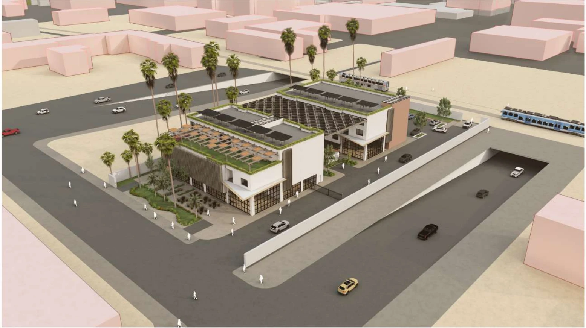
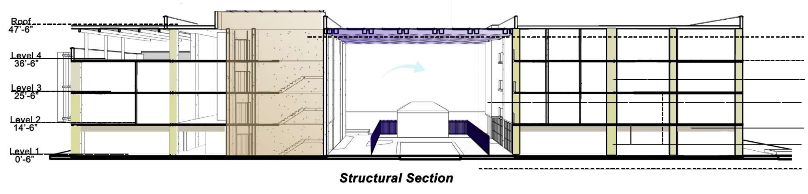
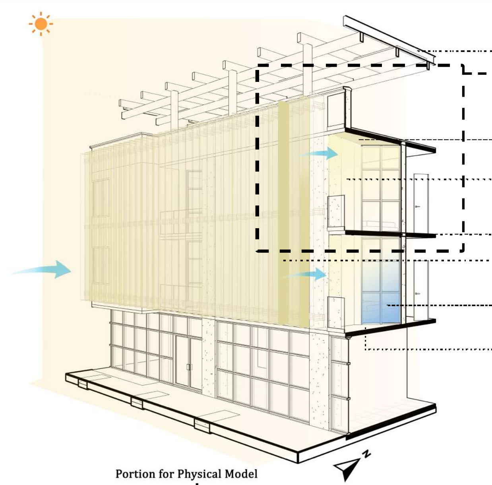
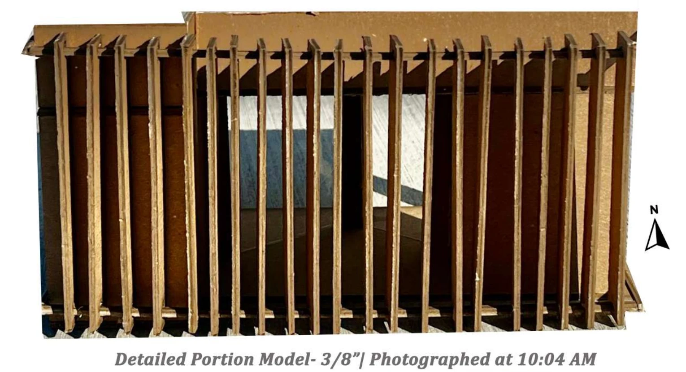
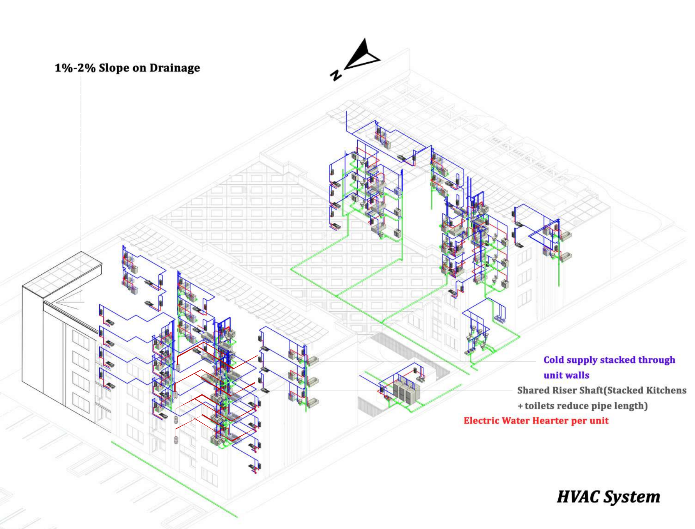
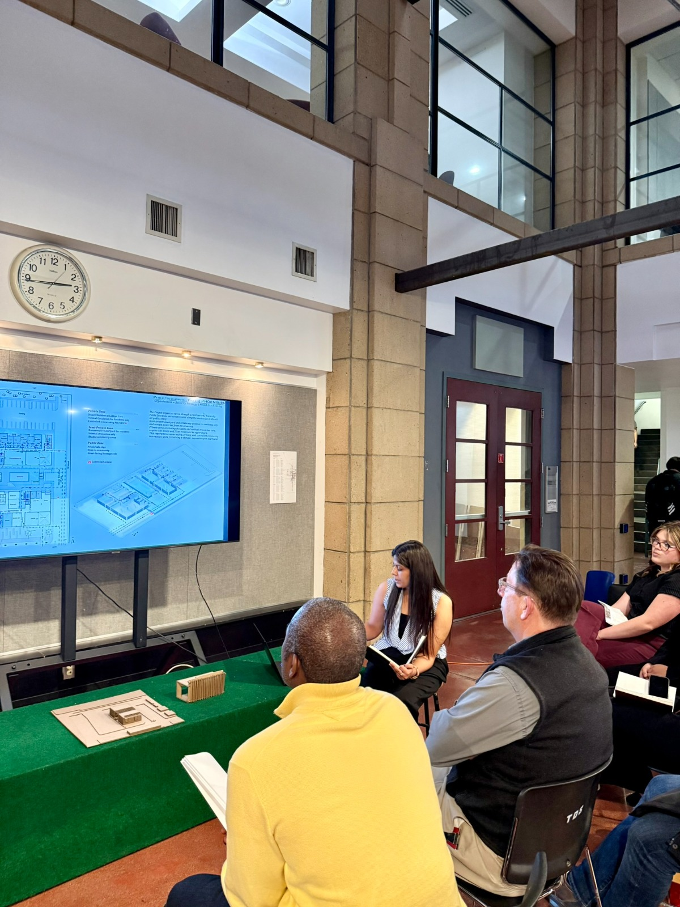

ACADEMIC PROJECT · ASU · FALL 2025
Phoenix
courtyard housing.
Building Systems & Constructability Study
I developed a mixed-use courtyard housing proposal for a Phoenix infill site, connecting structural layout, façade shading, and service-routing concepts. Drawings and physical models helped me explore how these systems fit together.

Two housing blocks organized around a shared courtyard.
02 / STRUCTURE
A section through the building.

Floor plates, columns, cores, and the courtyard canopy in one view.
03 / FAÇADE + PHYSICAL MODEL
From drawing to model.

Exploring shading, glazing, and the building edge.

A physical model to study the façade at a closer scale.
04 / SERVICES
Coordinating the systems.

Service-routing concepts connecting unit layouts and shared risers.
05 / PRESENTATION
Communicating the proposal.

Presenting the drawings and physical models for review.